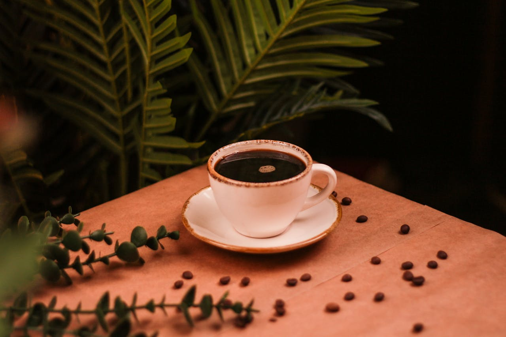

- 
Bienvenidos!
El café es una bebida que se obtiene mediante el percolado de agua caliente a través de los granos tostados y molidos de los frutos de la planta del café (cafeto). La cafeína es el componente estimulante principal del café, la cual es responsable de mejorar algunas funciones cognitivas, como acelerar los procesos cerebrales y mejorar la memoria, además de estimular el estado de vigilia y la capacidad de concentración.
Expresso/ Café solo
Uno de los tipos de café más básicos y sencillos, únicamente consta de un infusión de café la cual se realiza hirviendo agua en contacto con el grano.
Ristretto
Esta variante del espresso se caracteriza por tener la misma cantidad de café que el anterior pero emplear para ello una proporción menor de agua.
Cortado o macchiato
Uno de los más demandados por lo general, llamamos cortado o macchiato a un tipo de café espresso a la cual se le agrega una ligera cantidad de leche.
Americano
El café americano es un tipo de café derivado del espresso el cual se caracteriza por añadir una cantidad de agua mucho mayor de lo habitual en este tipo de preparación.